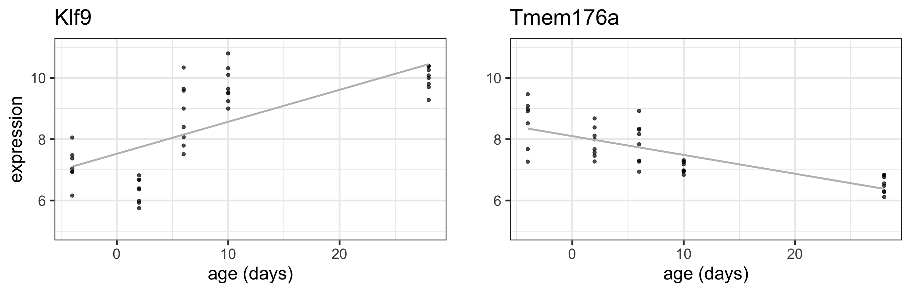
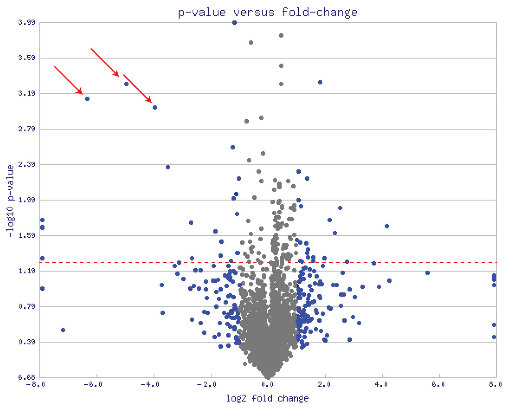
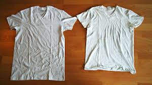

t-tests can be used to test the equality of 2 population means
ANOVA can be used to test the equality of more than 2 population means
Linear regression provides a general framework for modeling the relationship between a response variable and different types of explanatory variables
t-tests can be used to test the significance of individual coefficients
F-tests can be used to test the simultaneous significance of multiple coefficients (e.g. multiple levels of a single categorical factor, or multiple factors at once)
F-tests are used to compare nested models (overall effects or goodness of fit)
Learning objectives for today
Understand how linear regression represents continuous variables
Be familiar with the intuition behind how the regression line is estimated (Ordinary Least Squares)
Interpret parameters in a multiple linear regression model with continuous and factor variables
Explain the motivation behind specialized methods regression models in high-dimensional settings
e.g. Empirical Bayes techniques in limma
What if we treat age as a continuous variable?
Code
library(GEOquery)# read in our dataseteset <-getGEO("GSE4051", getGPL =FALSE)[[1]]# recode time pointspData(eset) <-pData(eset) %>%mutate(sample_id = geo_accession) %>%mutate(dev_stage =case_when(grepl("E16", title) ~"E16",grepl("P2", title) ~"P2",grepl("P6", title) ~"P6",grepl("P10", title) ~"P10",grepl("4 weeks", title) ~"P28" )) %>%mutate(genotype =case_when(grepl("Nrl-ko", title) ~"NrlKO",grepl("wt", title) ~"WT" ))# reorder factor levels, add continous age variablepData(eset) <-pData(eset) %>%mutate(dev_stage =fct_relevel(dev_stage, "E16", "P2", "P6", "P10", "P28")) %>%mutate(genotype =as.factor(genotype)) %>%mutate(genotype =fct_relevel(genotype, "WT", "NrlKO")) %>%mutate(age =ifelse(dev_stage =="E16", -4,ifelse(dev_stage =="P2", 2, ifelse(dev_stage =="P6", 6, ifelse(dev_stage =="P10", 10, 28)))))# function to return tidy data that merges expression matrix and metadatatoLongerMeta <-function(expset) {stopifnot(class(expset) =="ExpressionSet") expressionMatrix <- lonExpressionressionMatrix <-exprs(expset) %>%as.data.frame() %>%rownames_to_column("gene") %>%pivot_longer(cols =!gene, values_to ="expression",names_to ="sample_id") %>%left_join(pData(expset) %>%select(sample_id, dev_stage, age, genotype),by ="sample_id")return(expressionMatrix)}# pull out two genes of interesttwoGenes <-toLongerMeta(eset) %>%filter(gene %in%c("1456341_a_at", "1441811_x_at")) %>%mutate(gene =ifelse(gene =="1456341_a_at", "Klf9", "Tmem176a")) # make some plots - first with age continuousKlf9_C <-ggplot(filter(twoGenes, gene =="Klf9"), aes(x = age, y = expression)) +geom_point(alpha =0.7) +labs(title ="Klf9") +theme(legend.position ="none") +ylim(5, 11) +xlab("age (days)") Tmem176a_C <-ggplot(filter(twoGenes, gene =="Tmem176a"), aes(x = age, y = expression)) +geom_point(alpha =0.7) +labs(title ="Tmem176a") +ylim(5, 11) +xlab("age (days)") # next with age categoricalKlf9 <-ggplot(filter(twoGenes, gene =="Klf9"), aes(x = dev_stage, y = expression)) +geom_jitter(width =0, alpha =0.7) +theme(legend.position ="none") +labs(title ="Klf9") +ylim(5, 11) +xlab("Developmental Stage")Tmem176a <-ggplot(filter(twoGenes, gene =="Tmem176a"), aes(x = dev_stage, y = expression)) +geom_jitter(width =0, alpha =0.7) +labs(title ="Tmem176a") +ylim(5, 11) +xlab("Developmental Stage") grid.arrange(Klf9 +stat_summary(aes(group=1), fun = mean, geom="line", colour="grey"), Tmem176a +stat_summary(aes(group=1), fun = mean, geom="line", colour="grey") +ylab(""), Klf9_C +stat_summary(aes(group=1), fun = mean, geom="line", colour="grey"), Tmem176a_C +stat_summary(aes(group=1), fun = mean, geom="line", colour="grey") +ylab(""), nrow =2)
Linear model with age as continuous covariate
Code
grid.arrange(Klf9_C +stat_summary(aes(group=1), fun =mean, geom="line", colour="grey"), Tmem176a_C +stat_summary(aes(group=1), fun =mean, geom="line", colour="grey") +ylab(""), nrow =1)

Linear looks reasonable for gene Tmem176a, but not so much for Klf9
For now, assume linear is reasonable
Simple Linear Regression (Matrix form)
\[\large \mathbf{Y = X \boldsymbol\alpha + \boldsymbol\varepsilon}\]
In the first plot, drag individual points around and observe what changes in second plot
In the second plot, adjust the slope and intercept dials - what happens to the total area of the squares in the second plot when you modify the slope and intercept from the default values?
Note that you can reset to default values by refreshing the page
OLS Estimator for Simple Linear Regression (1 covariate)
Mathematically: \(\varepsilon_i\) represents the error: \(e_i = y_i - \alpha_0 - \alpha_1x_i, i = 1, ..., n\)
We want to find the line (i.e. an intercept and slope) such that the sum of squared errors is minimized: \[S(\alpha_0, \alpha_1)= \sum_{i=1}^n (y_i - \alpha_0 - \alpha_1 x_i)^2\]
\(S(\alpha_0, \alpha_1)\) is called an objective function
the sum of squared errors is also referred to as Residual Sum of Squares (RSS)
How to obtain estimates \((\hat{\alpha}_0, \hat{\alpha}_1)\) ? Let’s look at a more general case
where \(\mathbf{H}=\mathbf{X} (\mathbf{X}^T\mathbf{X})^{-1}\mathbf{X}^T\) is called the “hat matrix”
Assumptions of OLS Regression
\(\boldsymbol\varepsilon\) have mean zero
\(\boldsymbol\varepsilon\) are iid (implies constant variance)
(only required for hypothesis testing in small sample settings)\(\boldsymbol\varepsilon\) are Normally distributed
Connection to other estimators
If \(\boldsymbol\varepsilon\) are iid Normal, then OLS estimator is also MLE (Maximum Likelihood Estimator)
Properties of OLS regression (cont’d)
Residuals: (note NOT the same as errors \(\boldsymbol\varepsilon\)) \[\hat{\boldsymbol\varepsilon} = \mathbf{y} - \hat{\mathbf{y}} = \mathbf{y} - \mathbf{X} \hat{\boldsymbol\alpha}\]
Estimated standard errors for estimated regression coefficients: \(\hat{se}(\hat{\alpha}_j)\), obtained by taking the square root of the diagonal elements of \(\hat{Var}(\hat{\boldsymbol\alpha})\)
So with a large enough sample size a p-value for this hypothesis test is obtained by computing a tail probability for the observed value of \(\hat{\alpha}_j\) from a \(t_{n-p}\) distribution
\(x_{ij, KO}\) is the indicator variable for WT vs KO ( \(x_{ij, KO}=1\) for \(j=NrlKO\) and 0 for \(j=WT\) )
\(x_{ij, Age}\) is the continuous age covariate
Interpretation of parameters:
\(\alpha_0\) is the expected expression in WT for age = 0
The “intercept” for the knockouts is: \(\alpha_0 + \tau_{KO}\)
\(\tau_{Age}\) is the expected increase in expression in WT for every 1 day increase in age
The slope for the knockouts is: \(\tau_{Age} + \tau_{KO:Age}\)
Nested models
As always, you can assess the relevance of several terms at once (e.g. everything involving genotype) with an F-test:
Klf9dat <-filter(twoGenes, gene=="Klf9")anova(lm(expression ~ age*genotype, data = Klf9dat),lm(expression ~ age, data = Klf9dat))
Analysis of Variance Table
Model 1: expression ~ age * genotype
Model 2: expression ~ age
Res.Df RSS Df Sum of Sq F Pr(>F)
1 35 45.948
2 37 45.984 -2 -0.036415 0.0139 0.9862
Conclusion
We don’t have evidence that genotype affects the intercept or the slope
Under \(H_0:\) the reduced model explains the same amount variation in the outcome as the full,
\[F = \frac{\frac{RSS_{Red}-RSS_{Full}}{p_{Full}-p_{Red}}}{\frac{RSS_{Full}}{n-p_{Full}}} \sim \text{ } F_{p_{Fill}-p_{Red},\text{ } n-{p_{Full}}}\] A significant F-test means we reject the null; we have evidence that the full model explains significantly more variation in the outcome than the reduced.
Linear regression summary
linear model framework is extremely general
one extreme (simple): two-sample common variance t-test
another extreme (flexible): a polynomial, potentially different for each level of some factor
dichotomous predictor? 👍
categorical predictor? 👍
quantitative predictor? 👍
various combinations of the above? 👍
Don’t be afraid to build models with more than 1 covariate
later, we’ll talk about extensions to discrete outcomes (e.g. dichotomous or counts) via generalized linear models
What about the other 45 thousand probesets??
eset
ExpressionSet (storageMode: lockedEnvironment)
assayData: 45101 features, 39 samples
element names: exprs
protocolData: none
phenoData
sampleNames: GSM92610 GSM92611 ... GSM92648 (39 total)
varLabels: title geo_accession ... age (40 total)
varMetadata: labelDescription
featureData: none
experimentData: use 'experimentData(object)'
pubMedIds: 16505381
Annotation: GPL1261
\(\bf{V}\) is the “unscaled covariance” matrix, and is the same for all genes!
Estimated standard errors for estimated regression coefficients: \(\large\hat{se}(\hat{\alpha}_{jg})\) obtained by taking the square root of the \(j^{th}\) diagonal element of \(\hat{Var}(\hat{\boldsymbol\alpha}_g)\), which is \(s_g\sqrt{v_{jj}}\)
What’s the big deal?
So far, nothing is new - these are the “regular” t statistics for gene g and parameter j:
\[t_{gj} = \frac{\hat{\alpha}_{gj}}{s_g \sqrt{v_{jj}}} \sim t_{d} \text{ under } H_0\]
But there are so many of them!! 😲
Observed (i.e. empirical) issues with the “standard” t-test approach for assessing differential expression

Important
Some genes with very small p-values (i.e. large -log10 p-values) are not biologically meaningful (small effect size, e.g. fold change)
How do we end up with small p-values but subtle effects?
Borrows information from all genes to get a better estimate of the variance (especially in smaller sample size settings)
Efficiently fits many regression models without replicating unnecessary calculations!
Arranges output in a convenient way to ease further analysis, visualization, and interpretation
How does Empirical Bayes work?
Empirical: observed
Bayesian: incorporate ‘prior’ information
Intuition: estimate prior information from data; shrink (nudge) all estimates toward the consensus
Shrinkage = borrowing information across all genes

Genome-wide OLS fits
Gene by gene:
lm(y ~ x, data = gene) for each gene
For example, using dplyr::group_modify and broom::tidy
All genes at once, using limma:
lmFit(myDat, desMat)
myDat matrix-like object with expression values for all genes
desMat is a specially formatted design matrix (more on this later)
Or, even better, lmFit(eset, desMat) where eset is an ExpressionSet object
‘Industrial scale’ model fitting is good, because computations involving just the design matrix \(\mathbf{X}\) are not repeated tens of thousands of times unnecessarily:
Under-estimated variance leads to overly large t statistic, which leads to artificially small p-value
Modeling in limma
limma assumes that for each gene \(g\)
\[\hat{\alpha}_{gj} \,|\,\alpha_{gj}, \sigma_g^2 \sim N(\alpha_{gj}, \sigma_g^2 v_{jj})\]\[s^2_g \,|\, \sigma_g^2 \sim \frac{\sigma_g^2}{d}\chi^2_d\] which are the same as the usual assumptions about ordinary \(t\)-statistics: